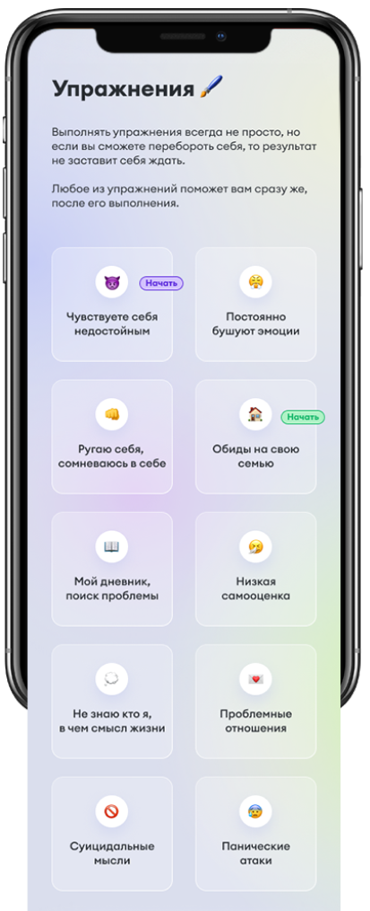

да будет svet
Приложение нацелено именно на интроспекцию, на
помощь в понимании самого себя. А так же в
определении корня проблемы, для быстрого выхода
из критического состояния.
01 — тестирование
Тесты необходимы для того чтобы определить
степень "вашей депрессии, а так же насколько
необходимо вмешательство специалиста.
Все ваши тесты будут зафиксированы в
календаре, вы сможете показать результаты
вашему врачу или отслеживать состояние
самостоятельно.
02 — упражнения
В приложении вы можете выбрать самую
актуальную проблему для себя и выполнить
упражнение прямо внутри приложения, чтобы
отследить основной триггер или просто
поднять себе настроение.
Вы можете выполнять упражнения как
выборочно, так и все одновременно для более
стабильного результата.


03 — Медитация
Приложение предлагает несколько видов
медитаций на ваш выбор. Если вы уже
практикуете медитации, то возможно найдете
для себя новый вид.
Так же включен вид медитации для тех, кто не
желает этим заниматься и не верит в
продуктивность методики.
Трансцедин- тальная
Когнетивная
2 варианта
04 — Анамнез
04 — База знаний
Вкладка анамнез поможет заполнить карту
вашего состояния более детально, для
лечащего врача.
Вы сможете в удобное время и комфортной
обстановке заполнять карту своей болезни.
После чего выгружать результаты в PDF и
делиться ими с лечащим врачом.
Это поможет в более скорые сроки поставить
диагноз, а так же поможет вашему врачу с
выбором лечением.
В базе знаний вы сможете найти важную
информацию о деперссии, почему она
появляется, как действует на нас.
Как депрессия выглядить с точки зрения
биологии и физиологии. А так же множество
интерсных материалов про способы борьбы.
Обращение
Добрый друг, в наше время несмотря на
прогрессивность медицины, общество все еще
отторгает такой бич современности, как
депрессивное расстройство.
Часто близкие люди или даже мы сами
обесцениваем испытываемые чувства и
заставляем сомневаться в существовании
проблемы.
Приложение поможет определить степень вашей
депрессии, а так же даст лучшие инструменты
по решению проблемы.
SVET app
Как наши чувства и мысли нас обманывают?
Мы обладаем различными позитивными
творческими качествами. Но наша генетика,
воспитание, окружающая среда и события могут
заложить в нас неправильное восприятие самих
себя.
Так, например, если в детстве вас часто
ругали, вы не получали похвалу или уважение
к себе, у вас могло образоваться
невербальное восприятие себя, как плохого
человека или низкая самооценка.
Все мы рождаемся добрыми детьми, с чистым
разумом и самооценкой.
Когда среди положительных и творческих
качеств внутри нас появляется червоточина
сознания, например с низкой самооценкой, она
порождает во взрослом возрасте негативные
эмоции при разных обстоятельствах.
Например, когда нам наступают на ногу можно
начать испытывать резко негативные чувства,
а не равнодушие к плевой ситуации.
Негативные эмоции в свою очередь порождают
негативное мышление, нацеленное на себя. То
есть - не человек случайно наступил мне на
ногу, а мне наступили на ногу, потому что
меня не уважают или не воспринимают всерьез.
В свою очередь наше тело реагирует на это и
выпускает реакцию в социум, порождая
конфликт с человек, вместо того чтобы
спокойно разойтись.
Мы называем это червоточиной нашего
сознания, которую разум тщательно от нас
скрывает.
Так червоточины влияют на нашу жизнь, мы
живем в 85% неосознанно, доверяем своим
мыслям и эмоциям, хотя они могут сыграть с
нами злую шутку.
Теперь, когда вы знаете, почему испытываете
негативные эмоции, тяжесть и боль, давайте
обсудим, а какие эмоции вы могли бы
испытывать?
В любой негативной ситуации человек не
должен принимать на свой счет негатив. Ведь
другой человек так же может быть болен и
воспринимать вас неправильно.
Важно открыть сердце для любви, тогда любой
негатив будет отскакивать от вас, а ваш
разум будет чист и не воспринимать
происходящее, как боль и на свой счет.
Необходимо понять, что депрессия - это не
недостаток чего-то, это переизбыток, часто
люди с депрессией видят больше других,
поэтому воспринимают мир более тяжелым. Но
если мы научимся открывать сердце и научимся
принимать самих себя, то боль уйдет и наше
осознанное увеличится с 15 % до 100%.
После такого конфликта наш разум
окончательно убеждается во зле вокруг,
именно так наши эмоции нас обманывают.
Депрессия - это не недостаток чего-то, это
переизбыток. Часто люди с депрессией видят
больше других
Депрессия - это не недостаток чего-то, это
переизбыток. Часто люди с депрессией видят
больше других
Мы обладаем различными позитивными
творческими качествами. Но наша генитика,
воспитание, окружающая среда и события
произошедшие с нами могут заложить в нас
неправильное восприятие самих себя.
Так, например, если в дестве вас часто
ругали, вы не получали похвалу или уважение
к себе, у вас могло образоваться
невербальное восприятие себя, как плохого
человека или низкая самооценка.
Все мы рождаемся добрыми детьми, с читым
разумом и самооценкой.
Когда среди положительных и творческих
качеств внутри нас появляется червоточина
сознания, например с низкой самооценкой, она
пораждает во взрослом возрасте негативные
эмоции при разных обстоятельствах.
Например, когда нам наступают на ногу мы
испытываем резко негативные чувства, а не
равнодушие к плевой ситуации.
Негативные эмоции в свою очередь порождают
негативное мышление, то есть - не человек
случайно наступил мне на ногу, а мне
наступили на ногу, потому что меня не
уважают или не воспринимают всерьез.
В свою очередь наше тело реагирует на это и
выпускает реакцию в социум, порождая конфлик
с человек, вместо того чтобы спокойно
разойтись.
Мы называем это червоточиной нашего
сознания, которую разум тщательно от нас
скрывает.
Так червототичины влияют на нашу жизнь, мы
живем в 85% неосознанно, доверяем своим
мыслям и эмоциям, хотя они могут съиграть с
нами злую шутку.
Теперь, когда вы знаете, почему испытываете
негативные эмоции, тяжесть и боль, давайте
обсудим, а какие эмоции вы могли бы
испытывать?
В любой негативной ситуации человек не
должен принимать на свой счет негатив. Ведь
другой человек так же может быть болен и
вопринимать вас неправильно.
Важно открыть сердце для любви, тогда любой
негатив будет отскакивать от вас, а ваш
разум будет чист и не воспринимать
происходящее, как боль и на свой счет.
Необходимо понять, что депрессия - это не
недостаток чего-то, это переисбыток, часто
люди с депрессией видят больше других,
поэтому воспринимают мир более тяжелым. Но
если мы научимся открывать сердце и научимся
принимать самих себя, то боль уйдет и наше
осознанное увеличится с 15 %
После такого конфликта наш разум
окончательно убеждается во зле вокруг,
именно так наши эмоции нас обманывают.
Депрессия - это не недостаток чего-то, это
переизбыток. Часто люди с депрессией видят
больше других